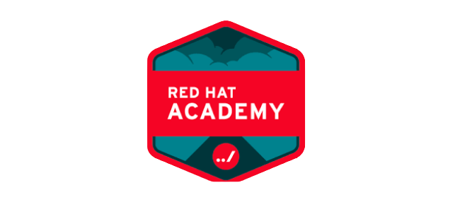
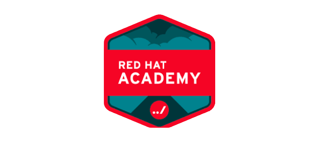

Strategi
Strategi Teknik Infomatika Universitas Riau adalah :
- Perbaikan dan penambahan fasilitas untuk sosialisasi dan umpan balik VMTS baik secara teknologi maupun non teknologi.
- Perbaikan dan penambahan fasilitas untuk sosialisasi dan umpan balik VMTS baik secara teknologi maupun non teknologi.
- Organisasi sehat, dinamis dan tanggap terhadap perubahan telah berjalan secara efektif melalui :
- Peningkatan tata pamong, kepemimpinan, sistem pengelolaan dan penjaminan mutu pada organisasi prodi Sarjana Teknik Informatika
- Peningkatan efektifitas sistem penjaminan mutu internal.
- Peningkatan nilai akreditasi program studi melalui sistem penjaminan mutu internal sesuai standar Badan Akreditasi Nasional Perguruan Tinggi (BAN-PT).D. Menjalankan sistem kepemimpinan organisasi, operasional dan publik dengan baik sesuai dengan ketentuan yang berlaku.
- Bertambahnya jumlah penerimaan mahasiswa jalur seleksi Nasional dan peningkatan kualitas akademik mahasiswa melalui
- Peningkatan jumlah persentase penerimaan mahasiswa melalui jalur seleksi Nasional
- Peningkatan kuantitas dan kualitas fasilitas mahasiswa untuk kegiatan akademik.
- Proses pembelajaran berbasis kompetensi.
- Terwujudnya jaringan komunikasi efektif antara civitas akademika, alumni dan stakeholder
- Meningkatkan kualitas dan kuantitas dosen dan tenaga kependidikan.
- Mengembangkan kurikulum berbasis kompetensi serta mengevaluasi secara periodik dengan mengikut sertakan stakeholders.
- Meningkatkan kualitas dan kuantitas pembelajaran yang efisien dan efektif.Menciptakan suasana akademik yang kondusif.
- Melakukan penelusuran lulusan (tracer study) secara periodik.
- Melakukan berbagi sumber (resources sharing) guna mengoptimalkan penggunaan sarana prasarana pendidikan.
- Memacu peran dosen untuk menyusun buku ajar untuk setiap mata kuliah.
- Menyusun perencanaan alokasi dan pengelolaan dana sesuai dengan proporsionalitas pendapatan
- Menganggarkan dana operasional pelaksanaan pendidikan, dana penelitian dan pengabdian kepada masyarakat yang sesuai dengan standar.
- Memacu peningkatan kegiatan pendidikan, penelitian dan pengabdian pada masyarakat
- Mengadakan dana untuk mendorong prestasi mahasiswa.
- Menambah prasarana dalam proses pembelajaran (seperti bahan kepustakaan, sarana pembelajaran) dan penelitian yang sesuai dengan standar.
- Menambah sarana dan prasarana laboratorium untuk tujuan pembelajaran maupun untuk tujuan penelitian yang sesuai dengan standar.
- Meningkatkan dana operasional perawatan sarana dan prasarana pendidikan, penelitian dan pengabdian kepada masyaratakat.
- Membangun sistem informasi, fasilitas pembelajaran elekronik (e-learning)guna keperluan pendidikan, penelitian dan pengabdian kepada masyaratakat.
- Menghasilkan produktivitas dan mutu yang baik dari hasil penelitian dosen serta keterlibatan mahasiswa dalam kegiatan tersebut melalui:
- Menyusun road mappenelitiandan pengabdian yang sesuai dengan visi dan misi prodi.
- Mengoptimalkan potensi Guru Besar dan Doktor dalam kegiatan penelitian.
- Mengefektifkan perpustakaan digital (digital library).
- Mengefektifkan sistem Pemanfaatan Pelaksanaan Pengelolaan Fakultas Teknik(BP3FT) dan Rekayasa Proses dan Keselamatan Industri (REPKIND) kepada stakeholder.
- Memberikan dorongan dan penghargaan bagi dosen yang melakukan publikasi ilmiah.Memberikan dorongan dan penghargaan bagi dosen yang menghasilkan Paten dalam bidang Teknologi InformasiMenghasilkan jumlah dan mutu kerjasama yang efektif untuk mendukung pelaksanaan misi Fakultas melalui:
- Meningkatkan kerjasamapenelitian dan pengabdian kepada masyarakat.
- Meningkatkan peran laboratorium dalam kegiatan penelitian dan pengabdian kepada masyarakat.


 
